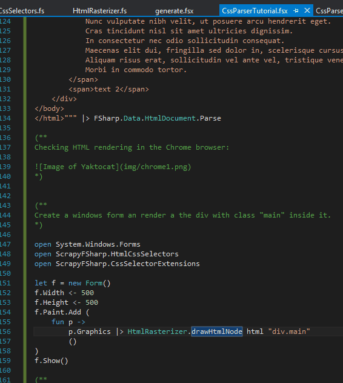

Parsing a CSS file
CssParser module can parse and manipulate CSS style sheet.
1: 2: 3: 4: 5: 6: 7: 8: 9: 10: 11: 12: 13: 14: 15: 16: 17: 18: 19: 20: 21: 22: 23: 24: 25: 26: 27: 28: 29: 30: 31: 32: 33: 34: |
|
Searching a CSS block from a selector
1: 2: |
|
sbCloseActive value is
|
Find color property of sbCloseActive
1: 2: 3: 4: |
|
color1 value is
|
Rendering a very simple HTML part
This part is experimental and just for fun. It demonstrates we can implement CSS inheritance and HTML rendering.
Parsing a simple HTML with FSharp.Data:
1: 2: 3: 4: 5: 6: 7: 8: 9: 10: 11: 12: 13: 14: 15: 16: 17: 18: 19: 20: 21: 22: 23: 24: 25: 26: 27: 28: 29: 30: 31: 32: 33: 34: 35: 36: 37: 38: 39: 40: 41: 42: 43: 44: 45: 46: |
|
Checking HTML rendering in the Chrome browser:

Create a windows form an render a the div with class "main" inside it.
1: 2: 3: 4: 5: 6: 7: 8: 9: 10: 11: 12: 13: |
|
Checking HTML rendering in the winform:

We are far a perfect result, but it is ressembling.
namespace System
namespace System.IO
namespace ScrapyFSharp
module CssParser
from ScrapyFSharp
from ScrapyFSharp
val css1 : StyleSheet
Full name: CssParserTutorial.css1
Full name: CssParserTutorial.css1
val parseCss : (string -> StyleSheet)
Full name: ScrapyFSharp.CssParser.parseCss
Full name: ScrapyFSharp.CssParser.parseCss
val sbCloseActive : CssBlock option
Full name: CssParserTutorial.sbCloseActive
Full name: CssParserTutorial.sbCloseActive
member StyleSheet.Block : s:string -> CssBlock option
val color1 : string option
Full name: CssParserTutorial.color1
Full name: CssParserTutorial.color1
union case Option.Some: Value: 'T -> Option<'T>
val p : CssBlock
member CssBlock.Property : p:string -> string option
union case Option.None: Option<'T>
val html : FSharp.Data.HtmlDocument
Full name: CssParserTutorial.html
Full name: CssParserTutorial.html
Multiple items
namespace FSharp
--------------------
namespace Microsoft.FSharp
namespace FSharp
--------------------
namespace Microsoft.FSharp
Multiple items
namespace FSharp.Data
--------------------
namespace Microsoft.FSharp.Data
namespace FSharp.Data
--------------------
namespace Microsoft.FSharp.Data
Multiple items
module HtmlDocument
from FSharp.Data
--------------------
type HtmlDocument =
private | HtmlDocument of docType: string * elements: HtmlNode list
override ToString : unit -> string
static member AsyncLoad : uri:string -> Async<HtmlDocument>
static member Load : uri:string -> HtmlDocument
static member Load : reader:TextReader -> HtmlDocument
static member Load : stream:Stream -> HtmlDocument
static member New : children:seq<HtmlNode> -> HtmlDocument
static member New : docType:string * children:seq<HtmlNode> -> HtmlDocument
static member Parse : text:string -> HtmlDocument
Full name: FSharp.Data.HtmlDocument
module HtmlDocument
from FSharp.Data
--------------------
type HtmlDocument =
private | HtmlDocument of docType: string * elements: HtmlNode list
override ToString : unit -> string
static member AsyncLoad : uri:string -> Async<HtmlDocument>
static member Load : uri:string -> HtmlDocument
static member Load : reader:TextReader -> HtmlDocument
static member Load : stream:Stream -> HtmlDocument
static member New : children:seq<HtmlNode> -> HtmlDocument
static member New : docType:string * children:seq<HtmlNode> -> HtmlDocument
static member Parse : text:string -> HtmlDocument
Full name: FSharp.Data.HtmlDocument
static member FSharp.Data.HtmlDocument.Parse : text:string -> FSharp.Data.HtmlDocument
namespace System.Windows
namespace System.Windows.Forms
module HtmlCssSelectors
from ScrapyFSharp
from ScrapyFSharp
module CssSelectorExtensions
from ScrapyFSharp
from ScrapyFSharp
val f : Form
Full name: CssParserTutorial.f
Full name: CssParserTutorial.f
Multiple items
type Form =
inherit ContainerControl
new : unit -> Form
member AcceptButton : IButtonControl with get, set
member Activate : unit -> unit
member ActiveMdiChild : Form
member AddOwnedForm : ownedForm:Form -> unit
member AllowTransparency : bool with get, set
member AutoScale : bool with get, set
member AutoScaleBaseSize : Size with get, set
member AutoScroll : bool with get, set
member AutoSize : bool with get, set
...
nested type ControlCollection
Full name: System.Windows.Forms.Form
--------------------
Form() : unit
type Form =
inherit ContainerControl
new : unit -> Form
member AcceptButton : IButtonControl with get, set
member Activate : unit -> unit
member ActiveMdiChild : Form
member AddOwnedForm : ownedForm:Form -> unit
member AllowTransparency : bool with get, set
member AutoScale : bool with get, set
member AutoScaleBaseSize : Size with get, set
member AutoScroll : bool with get, set
member AutoSize : bool with get, set
...
nested type ControlCollection
Full name: System.Windows.Forms.Form
--------------------
Form() : unit
property Control.Width: int
property Control.Height: int
event Control.Paint: IEvent<PaintEventHandler,PaintEventArgs>
member IObservable.Add : callback:('T -> unit) -> unit
val p : PaintEventArgs
property PaintEventArgs.Graphics: Drawing.Graphics
module HtmlRasterizer
from ScrapyFSharp
from ScrapyFSharp
val drawHtmlNode : html:FSharp.Data.HtmlDocument -> selector:string -> g:Drawing.Graphics -> unit
Full name: ScrapyFSharp.HtmlRasterizer.drawHtmlNode
Full name: ScrapyFSharp.HtmlRasterizer.drawHtmlNode
Control.Show() : unit
Form.Show(owner: IWin32Window) : unit
Form.Show(owner: IWin32Window) : unit